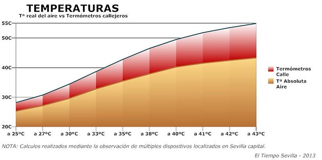

El tiempo en sevilla
A continuacion proporcionamos informacion sobre el tiempo en sevilla
Cuando el calor comienza a apretar y sobre todo en verano, en zonas del valle del Guadalquivir y campiña,
resulta increíblemente natural el hablar de temperaturas de 50ºC o incluso de más, aunque en verdad y
oficialmente las máximas anuales absolutas o reales no hayan sobrepasado los 43-44ºC realmente (y eso de manera
extraordinaria). Hemos hecho de los valores exagerados lo cotidiano, cuando de normal no tienen absolutamente
nada. Algunos se han podido acostumbrar a ello… pero en en contra de la desinformación y en defensa de la
objetividad hemos de advertir que esos valores de temperatura no son correctos ni aproximados. La fuente de
éstos datos erróneos son sin duda los termómetros urbanos, los cuales generan desinformación generalizada al
ciudadano y contradicen los valores de «temperatura real» que se ofrecen en los pronósticos por parte de los
organismos oficiales, tal caso como es la Agencia Estatal de Meteorología (AEMET).
